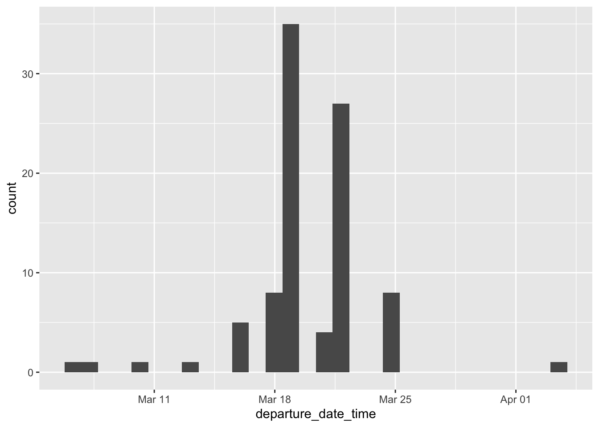
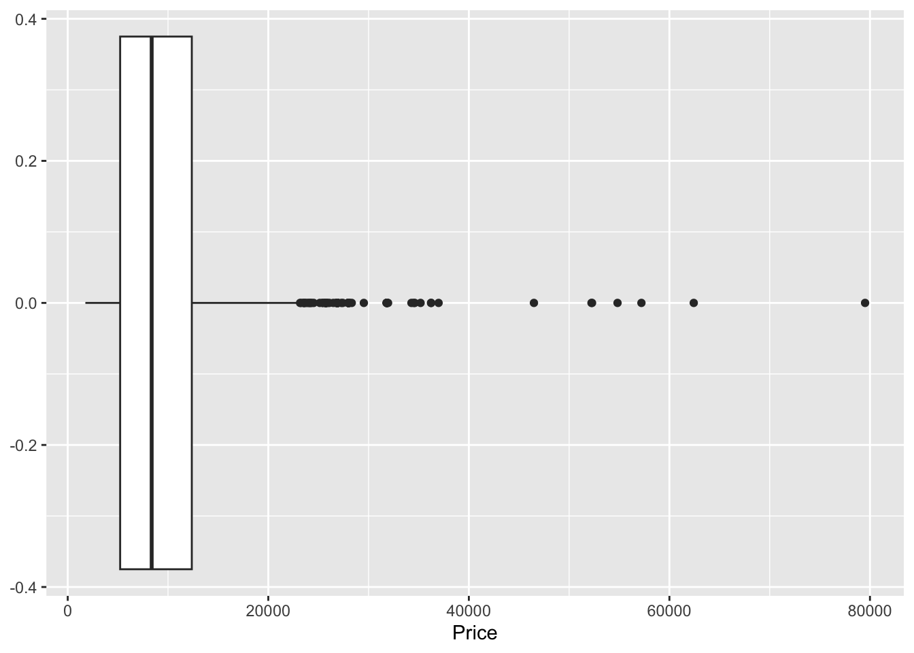
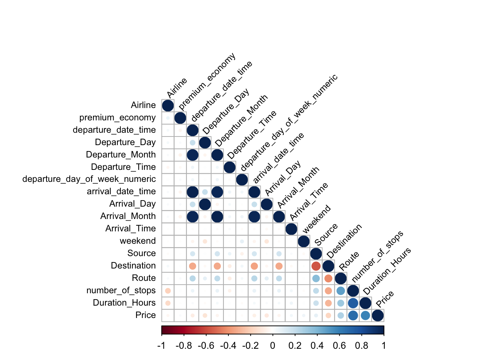
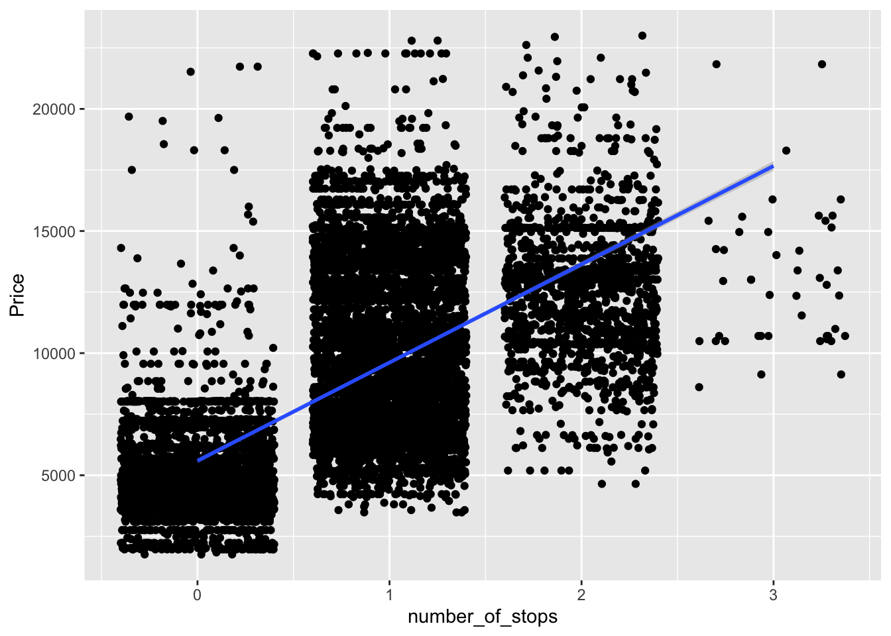
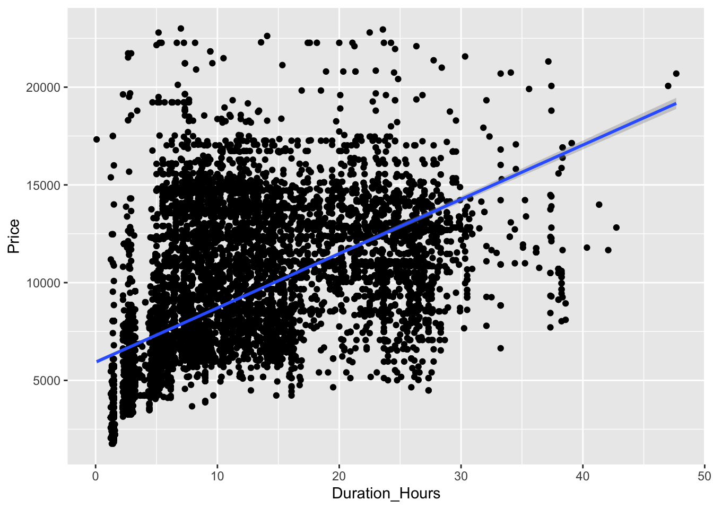
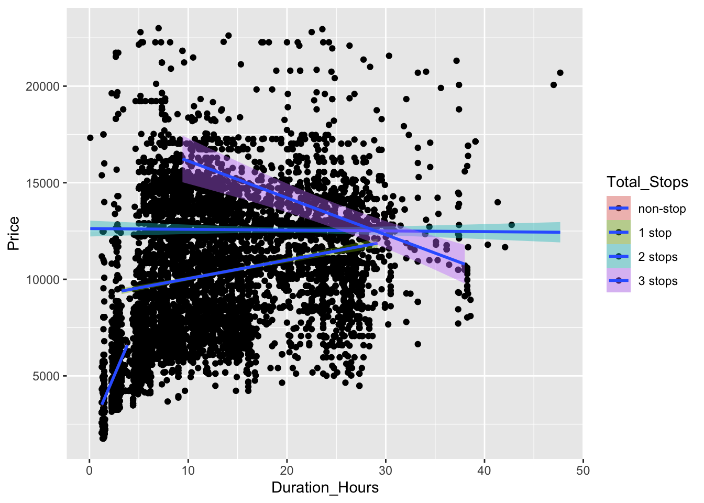
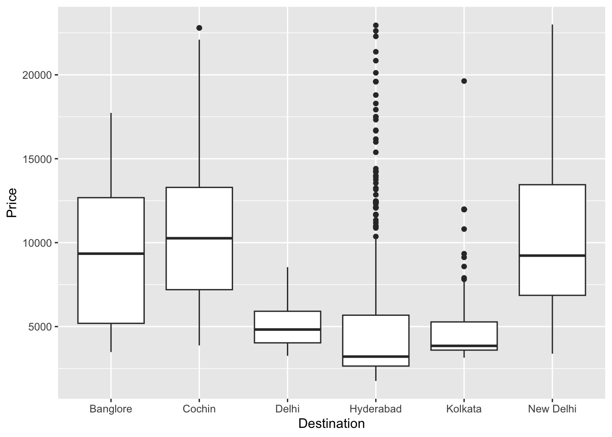
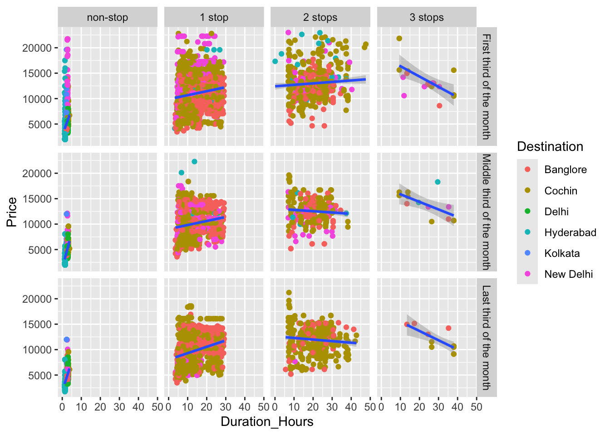
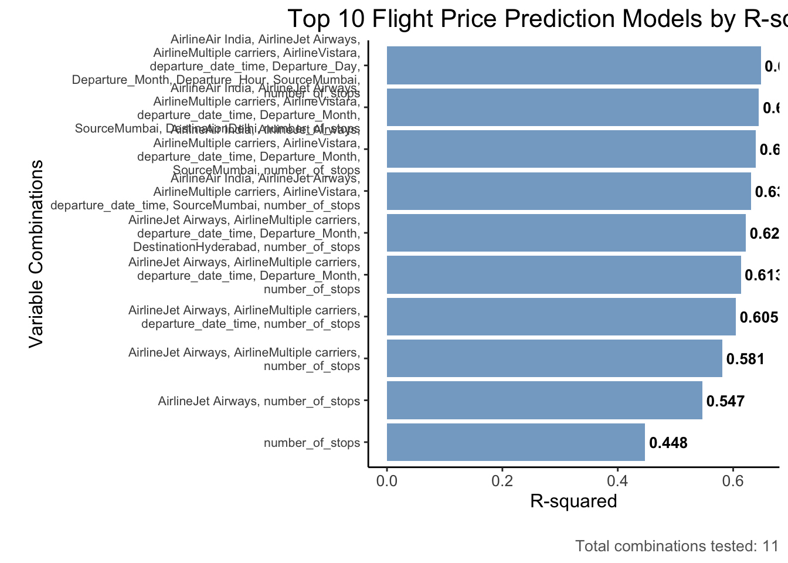

# Accessing and Reading Data
library(googleCloudStorageR) # let's me pull in the data from GCP
library(readxl) # read data
# Data Manipulation
library(tidyverse) # Basic data manipulation function
library(janitor) # Advanced data manipulation function
# Dealing with Dates
library(lubridate)
library(hms)
# Graphing and Analysis
library(corrplot) # graph correlation plots
library(leaps) # fancy regressions
library(broom) # fancy regressions
# Quarto
library(kableExtra)Flight EDA
Getting Set Up
Packages
Data
glimpse(flight_data)Rows: 10,683
Columns: 11
$ Airline <chr> "IndiGo", "Air India", "Jet Airways", "IndiGo", "IndiG…
$ Date_of_Journey <chr> "24/03/2019", "1/05/2019", "9/06/2019", "12/05/2019", …
$ Source <chr> "Banglore", "Kolkata", "Delhi", "Kolkata", "Banglore",…
$ Destination <chr> "New Delhi", "Banglore", "Cochin", "Banglore", "New De…
$ Route <chr> "BLR → DEL", "CCU → IXR → BBI → BLR", "DEL → LKO → BOM…
$ Dep_Time <chr> "22:20", "05:50", "09:25", "18:05", "16:50", "09:00", …
$ Arrival_Time <chr> "01:10 22 Mar", "13:15", "04:25 10 Jun", "23:30", "21:…
$ Duration <chr> "2h 50m", "7h 25m", "19h", "5h 25m", "4h 45m", "2h 25m…
$ Total_Stops <chr> "non-stop", "2 stops", "2 stops", "1 stop", "1 stop", …
$ Additional_Info <chr> "No info", "No info", "No info", "No info", "No info",…
$ Price <dbl> 3897, 7662, 13882, 6218, 13302, 3873, 11087, 22270, 11…Data Cleaning
Removing Missing Data and Data with No Variance
Amount of Missingness by Variable
flight_data %>%
summarise_all(~ sum(is.na(.))) Airline Date_of_Journey Source Destination Route Dep_Time Arrival_Time
1 0 0 0 0 1 0 0
Duration Total_Stops Additional_Info Price
1 0 1 0 0Only one flight has 4 stops
flight_data %>%
filter(Total_Stops == "4 stops") Airline Date_of_Journey Source Destination
1 Air India 01/03/2019 Banglore New Delhi
Route Dep_Time Arrival_Time Duration Total_Stops
1 BLR → CCU → BBI → HYD → VGA → DEL 05:50 11:20 02 Mar 29h 30m 4 stops
Additional_Info Price
1 Change airports 17686Removing Both
flight_data <- flight_data %>%
filter(Total_Stops != "4 stops") %>%
na.omit()Updating Data Formats
flight_data$Airline <- as.factor(flight_data$Airline)
flight_data$Source <- as.factor(flight_data$Source)
flight_data$Destination <- as.factor(flight_data$Destination)
flight_data$Total_Stops <- factor(flight_data$Total_Stops, levels = c("non-stop", "1 stop", "2 stops", "3 stops", "4 stops"))
flight_data$Additional_Info <- as.factor(flight_data$Additional_Info)Dates
Arrival time is date and time but departure time is just the time, so let’s get that fixed.
flight_data1 <- flight_data %>%
mutate(departure_date_time = dmy_hms(paste0(Date_of_Journey, " ", Dep_Time, ":00"))) There is only a date for arrival if it was different than the departure date. Let’s get that fixed so that both departure and arrival have a full date and time set up.
flight_data2 <- flight_data1 %>%
mutate(Arrival_Time_Only = str_extract(Arrival_Time, "^\\d{2}:\\d{2}"), # Pull out just time
Dep_Time = paste0(Dep_Time, ":00"),
Arrival_Time_Only = paste0(Arrival_Time_Only, ":00"),
Arrival_Date = str_extract(Arrival_Time, "\\d{1,2} \\w{3}$") # Pull out just date
) %>%
separate(Arrival_Date, into = c("Arrival_Day", "Arrival_Month"), sep = " ", remove = FALSE) %>% # separate month and date
mutate(Arrival_Month_Num = case_when(Arrival_Month == "Jan" ~ 01, # replacing the words with numbers
Arrival_Month == "Feb" ~ 02,
Arrival_Month == "Mar" ~ 03,
Arrival_Month == "Apr" ~ 04,
Arrival_Month == "May" ~ 05,
Arrival_Month == "Jun" ~ 06,
Arrival_Month == "Jul" ~ 07,
Arrival_Month == "Aug" ~ 08,
Arrival_Month == "Sep" ~ 09,
Arrival_Month == "Oct" ~ 10,
Arrival_Month == "Nov" ~ 11,
Arrival_Month == "Dec" ~ 12)) %>%
separate(Date_of_Journey, # The dates don't have years, so pulling out the departure years as well
into = c("Departure_Day", "Departure_Month", "Departure_Year"),
sep = "/",
remove = FALSE) %>%
mutate(Arrival_Day = ifelse(!is.na(Arrival_Day), Arrival_Day, as.numeric(Departure_Day)), # replacing blanks with departures
Arrival_Month_Num = ifelse(!is.na(Arrival_Month_Num), Arrival_Month_Num, as.numeric(Departure_Month)), # replacing blanks with departures
Arrival_Date_combined = paste0(Departure_Year, "-", Arrival_Month_Num, "-", Arrival_Day)) %>% # putting it all together
mutate(arrival_date_time = ymd_hms(paste0(Arrival_Date_combined, " ", Arrival_Time_Only))) %>% # making it the same format
select(-Arrival_Month, -Arrival_Time) %>%
rename(Departure_Time = Dep_Time,
Arrival_Month = Arrival_Month_Num,
Arrival_Time = Arrival_Time_Only) %>%
select(Airline, Date_of_Journey,
departure_date_time, Departure_Day, Departure_Month, Departure_Year, Departure_Time,
arrival_date_time, Arrival_Day, Arrival_Month, Arrival_Time,
Duration,
Source, Destination, Route, Total_Stops, Price, Additional_Info)
flight_data3 <- flight_data2Making sure all the dates are formatted correctly
flight_data3$Departure_Day <- as.numeric(flight_data3$Departure_Day)
flight_data3$Departure_Month <- as.numeric(flight_data3$Departure_Month)
flight_data3$Departure_Year <- as.numeric(flight_data3$Departure_Year)
flight_data3$Arrival_Day <- as.numeric(flight_data3$Arrival_Day)
flight_data3$Departure_Time <- as_hms(flight_data3$Departure_Time)
flight_data3$Arrival_Time <- as_hms(flight_data3$Arrival_Time)
flight_data4 <- flight_data3Let’s add features for day of week and hour of departure
flight_data4$departure_day_of_week <- weekdays(flight_data4$departure_date_time)
flight_data4$Departure_Hour = hour(flight_data4$Departure_Time)I don’t need to care about time zones since all the cities are in the same time zone.
unique(flight_data4$Source)[1] Banglore Kolkata Delhi Chennai Mumbai
Levels: Banglore Chennai Delhi Kolkata Mumbaiunique(flight_data4$Destination)[1] New Delhi Banglore Cochin Kolkata Delhi Hyderabad
Levels: Banglore Cochin Delhi Hyderabad Kolkata New DelhiDuration
First calculating duration
flight_data4 <- flight_data4 %>%
mutate(
Duration_Hours = replace_na(as.numeric(str_extract(Duration, "\\d+(?=h)")), 0) +
replace_na(as.numeric(str_extract(Duration, "\\d+(?=m)")), 0) / 60
)Then examining if calculated duration is the same as provided duration. There are a handful of flights that appear to be different. For some, it seems the arrival is before the departure.
flight_data4 %>%
rowwise() %>%
mutate(calculated_duration = arrival_date_time - departure_date_time,
calculated_duration_hours = as.numeric(calculated_duration, units = "hours")
) %>%
mutate(difference_between_calculation_file = Duration_Hours - calculated_duration_hours,
abs_difference_between_calculation_file = abs(difference_between_calculation_file)) %>%
filter(difference_between_calculation_file > 1) %>%
select(departure_date_time, arrival_date_time, calculated_duration_hours, Duration_Hours, difference_between_calculation_file) %>%
head(10) %>%
kbl() %>%
kable_styling(latex_options = "striped")| departure_date_time | arrival_date_time | calculated_duration_hours | Duration_Hours | difference_between_calculation_file |
|---|---|---|---|---|
| 2019-03-24 22:20:00 | 2019-03-22 01:10:00 | -69.16667 | 2.833333 | 72 |
| 2019-03-21 22:00:00 | 2019-03-19 13:20:00 | -56.66667 | 15.333333 | 72 |
| 2019-03-18 14:05:00 | 2019-03-16 05:05:00 | -57.00000 | 15.000000 | 72 |
| 2019-03-18 16:55:00 | 2019-03-16 09:00:00 | -55.91667 | 16.083333 | 72 |
| 2019-03-21 22:00:00 | 2019-03-19 10:50:00 | -59.16667 | 12.833333 | 72 |
| 2019-03-15 22:55:00 | 2019-03-13 05:05:00 | -65.83333 | 6.166667 | 72 |
| 2019-03-21 11:50:00 | 2019-03-19 08:55:00 | -50.91667 | 21.083333 | 72 |
| 2019-03-18 07:00:00 | 2019-03-16 07:40:00 | -47.33333 | 24.666667 | 72 |
| 2019-03-18 11:05:00 | 2019-03-16 22:10:00 | -36.91667 | 35.083333 | 72 |
| 2019-03-21 19:35:00 | 2019-03-19 00:35:00 | -67.00000 | 5.000000 | 72 |
No time-based patterns to wonky durations.
flight_data4 %>%
rowwise() %>%
mutate(calculated_duration = arrival_date_time - departure_date_time,
calculated_duration_hours = as.numeric(calculated_duration, units = "hours")
) %>%
mutate(difference_between_calculation_file = Duration_Hours - calculated_duration_hours,
abs_difference_between_calculation_file = abs(difference_between_calculation_file)) %>%
filter(difference_between_calculation_file > 1) %>%
ggplot(aes(x = departure_date_time)) +
geom_histogram(bins = 30)
Remove data where the arrival was before the departure.
flight_data4 <- flight_data4 %>%
rowwise() %>%
mutate(wonky_times = case_when(arrival_date_time > departure_date_time ~ "keep",
TRUE ~ "remove"
)) %>%
filter(wonky_times == "keep") %>%
select(-wonky_times) %>%
ungroup() Exploratory Data Analysis
Price Outliers
Number of Price Outliers
nrow(rstatix::identify_outliers(data = flight_data4,
variable = "Price"))[1] 90Vizualizations of outliers
flight_data4 %>%
ggplot(aes(x = Price)) +
geom_boxplot()
An outlier is a value 1.5 times that of the IQR. Below, we see outliers are prices above $23,170.
summary(rstatix::identify_outliers(data = flight_data4,
variable = "Price")) Airline Date_of_Journey departure_date_time
Jet Airways :58 Length:90 Min. :2019-03-01 00:20:00
Air India :15 Class :character 1st Qu.:2019-03-01 07:15:00
Multiple carriers :10 Mode :character Median :2019-03-01 13:27:30
Jet Airways Business: 6 Mean :2019-03-03 08:42:00
SpiceJet : 1 3rd Qu.:2019-03-01 22:50:00
Air Asia : 0 Max. :2019-05-09 12:50:00
(Other) : 0
Departure_Day Departure_Month Departure_Year Departure_Time
Min. : 1.000 Min. :3.000 Min. :2019 Min. :00:20:00
1st Qu.: 1.000 1st Qu.:3.000 1st Qu.:2019 1st Qu.:07:00:00
Median : 1.000 Median :3.000 Median :2019 Median :11:40:00
Mean : 2.156 Mean :3.022 Mean :2019 Mean :12:42:00
3rd Qu.: 1.000 3rd Qu.:3.000 3rd Qu.:2019 3rd Qu.:17:37:30
Max. :24.000 Max. :5.000 Max. :2019 Max. :23:00:00
arrival_date_time Arrival_Day Arrival_Month
Min. :2019-03-01 10:45:00 Min. : 1.000 Min. :3.000
1st Qu.:2019-03-01 19:10:00 1st Qu.: 1.000 1st Qu.:3.000
Median :2019-03-02 03:20:00 Median : 2.000 Median :3.000
Mean :2019-03-03 21:53:33 Mean : 2.689 Mean :3.022
3rd Qu.:2019-03-02 17:13:45 3rd Qu.: 2.000 3rd Qu.:3.000
Max. :2019-05-10 01:30:00 Max. :24.000 Max. :5.000
Arrival_Time Duration Source Destination
Min. :00:45:00.000000 Length:90 Banglore:68 Banglore : 1
1st Qu.:09:00:00.000000 Class :character Chennai : 0 Cochin :16
Median :13:17:30.000000 Mode :character Delhi :16 Delhi : 0
Mean :13:05:33.333333 Kolkata : 1 Hyderabad: 5
3rd Qu.:19:10:00.000000 Mumbai : 5 Kolkata : 0
Max. :23:55:00.000000 New Delhi:68
Route Total_Stops Price Additional_Info
Length:90 non-stop: 3 Min. :23170 No info :73
Class :character 1 stop :71 1st Qu.:25735 1 Long layover :10
Mode :character 2 stops :16 Median :26890 Business class : 4
3 stops : 0 Mean :29952 1 Short layover: 1
4 stops : 0 3rd Qu.:29226 2 Long layover : 1
Max. :79512 Change airports: 1
(Other) : 0
departure_day_of_week Departure_Hour Duration_Hours is.outlier
Length:90 Min. : 0.00 Min. : 2.583 Mode:logical
Class :character 1st Qu.: 7.00 1st Qu.: 7.750 TRUE:90
Mode :character Median :11.00 Median :11.833
Mean :12.14 Mean :13.193
3rd Qu.:17.00 3rd Qu.:16.021
Max. :23.00 Max. :38.583
is.extreme
Mode :logical
FALSE:76
TRUE :14
Removing the outliers.
flight_data5 <- flight_data4 %>%
filter(Price < 23170)Correlation Matrix
Including the variables in my correlation Matrix
corr.data <- flight_data5 %>%
mutate(departure_day_of_week_numeric = case_when(departure_day_of_week == "Sunday" ~ 1,
departure_day_of_week == "Monday" ~ 2,
departure_day_of_week == "Tuesday" ~ 3,
departure_day_of_week == "Wednesday" ~ 4,
departure_day_of_week == "Thursday" ~ 5,
departure_day_of_week == "Friday" ~ 6,
departure_day_of_week == "Saturday" ~ 7),
weekend = case_when(departure_day_of_week == "Sunday" | departure_day_of_week == "Saturday" ~ "Weekend",
TRUE ~ "Weekday"),
number_of_stops = case_when(Total_Stops == "non-stop" ~ 0,
Total_Stops == "1 stop" ~ 1,
Total_Stops == "2 stops" ~ 2,
Total_Stops == "3 stops" ~ 3,
Total_Stops == "4 stops" ~ 4),
premium_economy = str_detect(Airline, "Premium")) %>%
select(Airline, premium_economy, departure_date_time, Departure_Day, Departure_Month, Departure_Time,
departure_day_of_week_numeric, arrival_date_time, Arrival_Day, Arrival_Month, Arrival_Time,
weekend, Source, Destination, Route, number_of_stops,
Duration_Hours, Price) %>%
data.matrix()
corr_matrix <- round(cor(corr.data, use="pairwise.complete.obs", method="pearson"), 2)
corrplot(corr_matrix, method="circle", type="lower", tl.col = "black", tl.cex = .75,
tl.srt = 45)
Let’s look at just the Price relationships.
corr_matrix_df <- rstatix::cor_gather(corr_matrix)
corr_matrix_df %>%
filter(var1 == 'Price') %>%
kbl() %>%
kable_styling(latex_options = "striped")| var1 | var2 | cor |
|---|---|---|
| Price | Airline | -0.04 |
| Price | premium_economy | 0.02 |
| Price | departure_date_time | -0.08 |
| Price | Departure_Day | -0.12 |
| Price | Departure_Month | -0.05 |
| Price | Departure_Time | 0.00 |
| Price | departure_day_of_week_numeric | -0.02 |
| Price | arrival_date_time | -0.07 |
| Price | Arrival_Day | -0.10 |
| Price | Arrival_Month | -0.05 |
| Price | Arrival_Time | 0.04 |
| Price | weekend | 0.05 |
| Price | Source | 0.08 |
| Price | Destination | -0.18 |
| Price | Route | 0.26 |
| Price | number_of_stops | 0.67 |
| Price | Duration_Hours | 0.58 |
| Price | Price | 1.00 |
Graphing Strongest Relationships
Price by total stops
flight_data5 %>%
filter(!is.na(Total_Stops)) %>%
mutate(number_of_stops = case_when(Total_Stops == "non-stop" ~ 0,
Total_Stops == "1 stop" ~ 1,
Total_Stops == "2 stops" ~ 2,
Total_Stops == "3 stops" ~ 3,
Total_Stops == "4 stops" ~ 4)) %>%
ggplot(aes(x = number_of_stops, y = Price)) +
geom_point(position = 'jitter')+
geom_smooth(method = 'lm')
Duration of flight
flight_data5 %>%
filter(!is.na(Duration_Hours)) %>%
ggplot(aes(x = Duration_Hours, y = Price)) +
geom_point()+
geom_smooth(method = 'lm')
Both number of stops and duration
flight_data5 %>%
filter(!is.na(Duration_Hours)) %>%
filter(!is.na(Total_Stops)) %>%
ggplot(aes(x = Duration_Hours, y = Price, fill = Total_Stops)) +
geom_point()+
geom_smooth(method = 'lm')
Destination
flight_data5 %>%
filter(!is.na(Destination)) %>%
ggplot(aes(x = Destination, y = Price)) +
geom_boxplot()
Bringing multiple variables together
flight_data5 %>%
mutate(Departure_Day_categorical = case_when(Departure_Day <= 10 ~ "First third of the month",
Departure_Day >= 20 ~ "Last third of the month",
TRUE ~ "Middle third of the month"),
Departure_Day_categorical = factor(Departure_Day_categorical, levels = c("First third of the month",
"Middle third of the month",
"Last third of the month"))) %>%
ggplot(aes(x = Duration_Hours, y = Price)) +
geom_point(aes(color = Destination)) +
geom_smooth(method = 'lm') +
facet_grid(rows = vars(Departure_Day_categorical),
cols = vars(Total_Stops))
Regressions like a statistican
As a statistician, I would pick the variables that have the strongest relationships with the outcome, don’t have too much multicollinearity, and a theoretical reason to influence Price.
From below, we can see that the number of stops significantly predicts Price when controlling for other variables, as does duration, departure day, and most of the arrival cities.
This model predicts about 52% of the variance in total Price, which isn’t bad! But I think it could be better.
regression.flight <- lm(Price ~ Total_Stops + Duration_Hours +
Departure_Day + Destination, data = flight_data5)
summary(regression.flight)
Call:
lm(formula = Price ~ Total_Stops + Duration_Hours + Departure_Day +
Destination, data = flight_data5)
Residuals:
Min 1Q Median 3Q Max
-8614.1 -1815.4 -374.1 1699.6 14368.9
Coefficients:
Estimate Std. Error t value Pr(>|t|)
(Intercept) 5375.632 98.624 54.507 < 2e-16 ***
Total_Stops1 stop 4495.580 106.634 42.159 < 2e-16 ***
Total_Stops2 stops 6294.487 147.295 42.734 < 2e-16 ***
Total_Stops3 stops 6264.066 443.611 14.121 < 2e-16 ***
Duration_Hours 67.055 4.951 13.545 < 2e-16 ***
Departure_Day -48.954 3.280 -14.923 < 2e-16 ***
DestinationCochin 155.486 71.461 2.176 0.0296 *
DestinationDelhi 240.707 116.427 2.067 0.0387 *
DestinationHyderabad -564.808 133.297 -4.237 2.28e-05 ***
DestinationKolkata -70.288 167.835 -0.419 0.6754
DestinationNew Delhi 1855.577 114.595 16.193 < 2e-16 ***
---
Signif. codes: 0 '***' 0.001 '**' 0.01 '*' 0.05 '.' 0.1 ' ' 1
Residual standard error: 2816 on 10488 degrees of freedom
Multiple R-squared: 0.5217, Adjusted R-squared: 0.5213
F-statistic: 1144 on 10 and 10488 DF, p-value: < 2.2e-16Regressions like a Data Scientist
If I free myself from needing to rely on theory to make predictions, I would go with an All Subsets regression approach, which essentially tests every combination of possible variables, calculates the variance predicted and various model fit statistics (AIC, BIC, etc.) and selects the model with the highest predicted variances and lowest model fit statistics.
While I’ve done this analysis before in SPSS, I had not yet done it in R, so I had Claude help me write the code.
flight_data6 <- flight_data5 %>%
mutate(departure_day_of_week_numeric = case_when(departure_day_of_week == "Sunday" ~ 1,
departure_day_of_week == "Monday" ~ 2,
departure_day_of_week == "Tuesday" ~ 3,
departure_day_of_week == "Wednesday" ~ 4,
departure_day_of_week == "Thursday" ~ 5,
departure_day_of_week == "Friday" ~ 6,
departure_day_of_week == "Saturday" ~ 7),
number_of_stops = case_when(Total_Stops == "non-stop" ~ 0,
Total_Stops == "1 stop" ~ 1,
Total_Stops == "2 stops" ~ 2,
Total_Stops == "3 stops" ~ 3,
Total_Stops == "4 stops" ~ 4),
weekend = case_when(departure_day_of_week == "Sunday" | departure_day_of_week == "Saturday" ~ "Weekend",
TRUE ~ "Weekday"))First, I identify the variables in the model.
predictor_variables <- c("Airline", "departure_date_time", "Departure_Day",
"departure_day_of_week_numeric", "Departure_Month",
"Departure_Hour", "Source", "Destination",
"number_of_stops", "Duration_Hours")
outcome_variable <- "Price"Run the All Subsets regression analysis.
flight_all_subsets_leaps <- function(data = flight_data6, outcome_var = "Price",
predictor_vars = predictor_variables, method = "exhaustive") {
# Check if data exists
if (!exists("flight_data6")) {
stop("flight_data6 dataset not found. Please load your data first.")
}
# Remove rows with missing values in key variables
analysis_data <- data %>%
select(all_of(c(outcome_var, predictor_vars))) %>%
na.omit()
cat("Analysis dataset created with", nrow(analysis_data), "complete observations\n")
cat("Original dataset had", nrow(data), "observations\n\n")
# Create formula
formula_str <- paste(outcome_var, "~", paste(predictor_vars, collapse = " + "))
formula_obj <- as.formula(formula_str)
# Run all subsets regression
regsubsets_result <- regsubsets(formula_obj,
data = analysis_data,
nbest = 1, # Keep best model of each size
nvmax = length(predictor_vars), # Max variables
method = method) # "exhaustive", "forward", "backward"
# Extract results
summary_results <- summary(regsubsets_result)
# Create results data frame
results_df <- data.frame(
n_variables = 1:length(summary_results$rsq),
r_squared = summary_results$rsq,
adj_r_squared = summary_results$adjr2,
cp = summary_results$cp,
bic = summary_results$bic,
variables_included = apply(summary_results$which[,-1], 1, function(x) {
paste(names(x)[x], collapse = ", ")
})
)
# Find best models by different criteria
best_rsq_idx <- which.max(results_df$r_squared)
best_adj_rsq_idx <- which.max(results_df$adj_r_squared)
best_cp_idx <- which.min(results_df$cp)
best_bic_idx <- which.min(results_df$bic)
# Add indicator columns
results_df$best_rsq <- 1:nrow(results_df) == best_rsq_idx
results_df$best_adj_rsq <- 1:nrow(results_df) == best_adj_rsq_idx
results_df$best_cp <- 1:nrow(results_df) == best_cp_idx
results_df$best_bic <- 1:nrow(results_df) == best_bic_idx
return(list(
results = results_df,
regsubsets_object = regsubsets_result,
analysis_data = analysis_data,
best_models = list(
highest_rsq = results_df[best_rsq_idx, ],
best_adj_rsq = results_df[best_adj_rsq_idx, ],
best_cp = results_df[best_cp_idx, ],
best_bic = results_df[best_bic_idx, ]
)
))
}Select the best model
plot_flight_model_comparison <- function(results_df, top_n = 15) {
# Get top models
top_models <- head(results_df, top_n)
# Create the plot
p <- top_models %>%
mutate(variables_wrapped = str_wrap(variables_included, width = 50)) %>% # Fix: use variables_included column
mutate(variables_wrapped = fct_reorder(variables_wrapped, r_squared)) %>%
ggplot(aes(x = variables_wrapped, y = r_squared)) +
geom_bar(stat = 'identity', fill = 'steelblue', alpha = 0.7) +
geom_text(aes(label = paste0(round(r_squared, 3))),
hjust = -.1, size = 3.5, color = "black", fontface = 'bold') +
coord_flip() +
theme(plot.title = element_text(size = 16, hjust = 0.5),
plot.subtitle = element_text(hjust = 0.5),
plot.caption = element_text(size = 10, color = "#666666"),
axis.text.x = element_text(size = 10),
axis.text.y = element_text(size = 8),
axis.title.y = element_text(size = 12),
axis.title.x = element_text(size = 12),
panel.background = element_blank(),
axis.line = element_line(colour = "black")) +
labs(title = paste("Top", top_n, "Flight Price Prediction Models by R-squared"),
x = "\nVariable Combinations",
y = "R-squared\n",
caption = paste("Total combinations tested:", nrow(results_df)))
return(p)
}Get details on the best model.
get_best_flight_model_details <- function(data = flight_data6, outcome_var = "Price", model_variables_string) {
# Parse the variable string to extract original variable names
# This handles the dummy variables created by R for categorical variables
# Extract original variable names from the dummy variable names
original_vars <- c()
# Check for each of our original predictor variables
if (grepl("Airline", model_variables_string)) {
original_vars <- c(original_vars, "Airline")
}
if (grepl("departure_date_time", model_variables_string)) {
original_vars <- c(original_vars, "departure_date_time")
}
if (grepl("Departure_Day", model_variables_string)) {
original_vars <- c(original_vars, "Departure_Day")
}
if (grepl("departure_day_of_week_numeric", model_variables_string)) {
original_vars <- c(original_vars, "departure_day_of_week_numeric")
}
if (grepl("Departure_Month", model_variables_string)) {
original_vars <- c(original_vars, "Departure_Month")
}
if (grepl("Departure_Hour", model_variables_string)) {
original_vars <- c(original_vars, "Departure_Hour")
}
if (grepl("Source", model_variables_string)) {
original_vars <- c(original_vars, "Source")
}
if (grepl("Destination", model_variables_string)) {
original_vars <- c(original_vars, "Destination")
}
if (grepl("number_of_stops", model_variables_string)) {
original_vars <- c(original_vars, "number_of_stops")
}
if (grepl("Duration_Hours", model_variables_string)) {
original_vars <- c(original_vars, "Duration_Hours")
}
# Remove rows with missing values using original variable names
analysis_data <- data %>%
select(all_of(c(outcome_var, original_vars))) %>%
na.omit()
# Create formula with original variables
formula_str <- paste(outcome_var, "~", paste(original_vars, collapse = " + "))
# Fit the model
best_model <- lm(as.formula(formula_str), data = analysis_data)
# Get detailed summary
model_summary <- summary(best_model)
cat("=== BEST FLIGHT PRICE PREDICTION MODEL ===\n")
cat("Original Variables Used:", paste(original_vars, collapse = ", "), "\n")
cat("R-squared:", round(model_summary$r.squared, 4), "\n")
cat("Adjusted R-squared:", round(model_summary$adj.r.squared, 4), "\n")
cat("F-statistic:", round(model_summary$fstatistic[1], 4), "\n")
cat("P-value:", format.pval(pf(model_summary$fstatistic[1],
model_summary$fstatistic[2],
model_summary$fstatistic[3],
lower.tail = FALSE)), "\n")
cat("Number of observations:", nrow(analysis_data), "\n\n")
print(model_summary)
return(best_model)
}Final results.
if (exists("flight_data6")) {
cat("=== RUNNING ALL SUBSETS REGRESSION ON FLIGHT PRICE DATA ===\n\n")
# Method 1: Using leaps package (recommended)
cat("Running analysis with leaps package...\n")
leaps_results <- flight_all_subsets_leaps()
cat("\n=== RESULTS SUMMARY ===\n")
cat("All models ranked by number of variables:\n")
print(leaps_results$results)
cat("\n=== BEST MODELS BY DIFFERENT CRITERIA ===\n")
cat("Highest R-squared:\n")
print(leaps_results$best_models$highest_rsq)
cat("\nBest Adjusted R-squared:\n")
print(leaps_results$best_models$best_adj_rsq)
cat("\nBest BIC (Bayesian Information Criterion):\n")
print(leaps_results$best_models$best_bic)
# Get detailed results for the model with highest R-squared
cat("\n=== DETAILED RESULTS FOR HIGHEST R-SQUARED MODEL ===\n")
best_model_rsq <- get_best_flight_model_details(model_variables_string = leaps_results$best_models$highest_rsq$variables_included)
# Get detailed results for the model with best BIC (often better for prediction)
cat("\n=== DETAILED RESULTS FOR BEST BIC MODEL (Recommended) ===\n")
best_model_bic <- get_best_flight_model_details(model_variables_string = leaps_results$best_models$best_bic$variables_included)
# Create visualization
cat("\nCreating visualization...\n")
plot_comparison <- plot_flight_model_comparison(leaps_results$results, top_n = 10)
print(plot_comparison)
} else {
cat("ERROR: flight_data6 dataset not found!\n")
cat("Please load your dataset first, then re-run this code.\n")
cat("For example: flight_data6 <- read.csv('your_file.csv')\n")
}=== RUNNING ALL SUBSETS REGRESSION ON FLIGHT PRICE DATA ===
Running analysis with leaps package...
Analysis dataset created with 10499 complete observations
Original dataset had 10499 observationsReordering variables and trying again:
=== RESULTS SUMMARY ===
All models ranked by number of variables:
n_variables r_squared adj_r_squared cp bic
1 1 0.4475650 0.4475124 6422.2900 -6211.793
2 2 0.5465575 0.5464711 3392.8310 -8275.743
3 3 0.5814786 0.5813589 2325.4378 -9107.878
4 4 0.6046450 0.6044943 1618.0085 -9696.474
5 5 0.6134038 0.6132196 1351.7868 -9922.428
6 6 0.6217356 0.6215193 1098.6399 -10141.915
7 7 0.6310042 0.6307580 816.8072 -10393.116
8 8 0.6392008 0.6389257 567.8010 -10619.704
9 9 0.6447214 0.6444166 400.7432 -10772.332
10 10 0.6477946 0.6474588 308.6325 -10854.285
11 11 0.6517642 0.6513989 189.0715 -10964.029
variables_included
1 number_of_stops
2 AirlineJet Airways, number_of_stops
3 AirlineJet Airways, AirlineMultiple carriers, number_of_stops
4 AirlineJet Airways, AirlineMultiple carriers, departure_date_time, number_of_stops
5 AirlineJet Airways, AirlineMultiple carriers, departure_date_time, Departure_Month, number_of_stops
6 AirlineJet Airways, AirlineMultiple carriers, departure_date_time, Departure_Month, DestinationHyderabad, number_of_stops
7 AirlineAir India, AirlineJet Airways, AirlineMultiple carriers, AirlineVistara, departure_date_time, SourceMumbai, number_of_stops
8 AirlineAir India, AirlineJet Airways, AirlineMultiple carriers, AirlineVistara, departure_date_time, Departure_Month, SourceMumbai, number_of_stops
9 AirlineAir India, AirlineJet Airways, AirlineMultiple carriers, AirlineVistara, departure_date_time, Departure_Month, SourceMumbai, DestinationDelhi, number_of_stops
10 AirlineAir India, AirlineJet Airways, AirlineMultiple carriers, AirlineVistara, departure_date_time, Departure_Day, Departure_Month, Departure_Hour, SourceMumbai, number_of_stops
11 AirlineAir India, AirlineJet Airways, AirlineMultiple carriers, AirlineVistara, departure_date_time, Departure_Day, Departure_Month, Departure_Hour, DestinationDelhi, DestinationHyderabad, number_of_stops
best_rsq best_adj_rsq best_cp best_bic
1 FALSE FALSE FALSE FALSE
2 FALSE FALSE FALSE FALSE
3 FALSE FALSE FALSE FALSE
4 FALSE FALSE FALSE FALSE
5 FALSE FALSE FALSE FALSE
6 FALSE FALSE FALSE FALSE
7 FALSE FALSE FALSE FALSE
8 FALSE FALSE FALSE FALSE
9 FALSE FALSE FALSE FALSE
10 FALSE FALSE FALSE FALSE
11 TRUE TRUE TRUE TRUE
=== BEST MODELS BY DIFFERENT CRITERIA ===
Highest R-squared:
n_variables r_squared adj_r_squared cp bic
11 11 0.6517642 0.6513989 189.0715 -10964.03
variables_included
11 AirlineAir India, AirlineJet Airways, AirlineMultiple carriers, AirlineVistara, departure_date_time, Departure_Day, Departure_Month, Departure_Hour, DestinationDelhi, DestinationHyderabad, number_of_stops
best_rsq best_adj_rsq best_cp best_bic
11 TRUE TRUE TRUE TRUE
Best Adjusted R-squared:
n_variables r_squared adj_r_squared cp bic
11 11 0.6517642 0.6513989 189.0715 -10964.03
variables_included
11 AirlineAir India, AirlineJet Airways, AirlineMultiple carriers, AirlineVistara, departure_date_time, Departure_Day, Departure_Month, Departure_Hour, DestinationDelhi, DestinationHyderabad, number_of_stops
best_rsq best_adj_rsq best_cp best_bic
11 TRUE TRUE TRUE TRUE
Best BIC (Bayesian Information Criterion):
n_variables r_squared adj_r_squared cp bic
11 11 0.6517642 0.6513989 189.0715 -10964.03
variables_included
11 AirlineAir India, AirlineJet Airways, AirlineMultiple carriers, AirlineVistara, departure_date_time, Departure_Day, Departure_Month, Departure_Hour, DestinationDelhi, DestinationHyderabad, number_of_stops
best_rsq best_adj_rsq best_cp best_bic
11 TRUE TRUE TRUE TRUE
=== DETAILED RESULTS FOR HIGHEST R-SQUARED MODEL ===
=== BEST FLIGHT PRICE PREDICTION MODEL ===
Original Variables Used: Airline, departure_date_time, Departure_Day, Departure_Month, Departure_Hour, Destination, number_of_stops
R-squared: 0.6577
Adjusted R-squared: 0.657
F-statistic: 1006.463
P-value: < 2.22e-16
Number of observations: 10499
Call:
lm(formula = as.formula(formula_str), data = analysis_data)
Residuals:
Min 1Q Median 3Q Max
-7759.1 -1351.6 -193.1 1325.7 13953.6
Coefficients:
Estimate Std. Error t value Pr(>|t|)
(Intercept) 3.282e+07 2.167e+06 15.143 < 2e-16
AirlineAir India 1.600e+03 1.507e+02 10.616 < 2e-16
AirlineGoAir 1.221e+02 2.182e+02 0.560 0.5758
AirlineIndiGo 2.723e+02 1.451e+02 1.877 0.0605
AirlineJet Airways 4.173e+03 1.420e+02 29.382 < 2e-16
AirlineMultiple carriers 3.371e+03 1.571e+02 21.459 < 2e-16
AirlineMultiple carriers Premium economy 3.990e+03 6.775e+02 5.890 3.98e-09
AirlineSpiceJet -2.359e+02 1.599e+02 -1.475 0.1401
AirlineTrujet -2.279e+03 2.390e+03 -0.953 0.3405
AirlineVistara 2.194e+03 1.736e+02 12.639 < 2e-16
AirlineVistara Premium economy 3.512e+03 1.384e+03 2.537 0.0112
departure_date_time -2.126e-02 1.404e-03 -15.140 < 2e-16
Departure_Day 1.772e+03 1.208e+02 14.665 < 2e-16
Departure_Month 5.591e+04 3.716e+03 15.046 < 2e-16
Departure_Hour 9.406e+01 6.526e+00 14.414 < 2e-16
DestinationCochin 2.717e+02 6.596e+01 4.120 3.82e-05
DestinationDelhi -8.033e+02 9.214e+01 -8.718 < 2e-16
DestinationHyderabad -1.823e+03 1.086e+02 -16.786 < 2e-16
DestinationKolkata -1.958e+02 1.385e+02 -1.413 0.1576
DestinationNew Delhi 1.026e+03 1.065e+02 9.634 < 2e-16
number_of_stops 2.589e+03 5.310e+01 48.755 < 2e-16
(Intercept) ***
AirlineAir India ***
AirlineGoAir
AirlineIndiGo .
AirlineJet Airways ***
AirlineMultiple carriers ***
AirlineMultiple carriers Premium economy ***
AirlineSpiceJet
AirlineTrujet
AirlineVistara ***
AirlineVistara Premium economy *
departure_date_time ***
Departure_Day ***
Departure_Month ***
Departure_Hour ***
DestinationCochin ***
DestinationDelhi ***
DestinationHyderabad ***
DestinationKolkata
DestinationNew Delhi ***
number_of_stops ***
---
Signif. codes: 0 '***' 0.001 '**' 0.01 '*' 0.05 '.' 0.1 ' ' 1
Residual standard error: 2384 on 10478 degrees of freedom
Multiple R-squared: 0.6577, Adjusted R-squared: 0.657
F-statistic: 1006 on 20 and 10478 DF, p-value: < 2.2e-16
=== DETAILED RESULTS FOR BEST BIC MODEL (Recommended) ===
=== BEST FLIGHT PRICE PREDICTION MODEL ===
Original Variables Used: Airline, departure_date_time, Departure_Day, Departure_Month, Departure_Hour, Destination, number_of_stops
R-squared: 0.6577
Adjusted R-squared: 0.657
F-statistic: 1006.463
P-value: < 2.22e-16
Number of observations: 10499
Call:
lm(formula = as.formula(formula_str), data = analysis_data)
Residuals:
Min 1Q Median 3Q Max
-7759.1 -1351.6 -193.1 1325.7 13953.6
Coefficients:
Estimate Std. Error t value Pr(>|t|)
(Intercept) 3.282e+07 2.167e+06 15.143 < 2e-16
AirlineAir India 1.600e+03 1.507e+02 10.616 < 2e-16
AirlineGoAir 1.221e+02 2.182e+02 0.560 0.5758
AirlineIndiGo 2.723e+02 1.451e+02 1.877 0.0605
AirlineJet Airways 4.173e+03 1.420e+02 29.382 < 2e-16
AirlineMultiple carriers 3.371e+03 1.571e+02 21.459 < 2e-16
AirlineMultiple carriers Premium economy 3.990e+03 6.775e+02 5.890 3.98e-09
AirlineSpiceJet -2.359e+02 1.599e+02 -1.475 0.1401
AirlineTrujet -2.279e+03 2.390e+03 -0.953 0.3405
AirlineVistara 2.194e+03 1.736e+02 12.639 < 2e-16
AirlineVistara Premium economy 3.512e+03 1.384e+03 2.537 0.0112
departure_date_time -2.126e-02 1.404e-03 -15.140 < 2e-16
Departure_Day 1.772e+03 1.208e+02 14.665 < 2e-16
Departure_Month 5.591e+04 3.716e+03 15.046 < 2e-16
Departure_Hour 9.406e+01 6.526e+00 14.414 < 2e-16
DestinationCochin 2.717e+02 6.596e+01 4.120 3.82e-05
DestinationDelhi -8.033e+02 9.214e+01 -8.718 < 2e-16
DestinationHyderabad -1.823e+03 1.086e+02 -16.786 < 2e-16
DestinationKolkata -1.958e+02 1.385e+02 -1.413 0.1576
DestinationNew Delhi 1.026e+03 1.065e+02 9.634 < 2e-16
number_of_stops 2.589e+03 5.310e+01 48.755 < 2e-16
(Intercept) ***
AirlineAir India ***
AirlineGoAir
AirlineIndiGo .
AirlineJet Airways ***
AirlineMultiple carriers ***
AirlineMultiple carriers Premium economy ***
AirlineSpiceJet
AirlineTrujet
AirlineVistara ***
AirlineVistara Premium economy *
departure_date_time ***
Departure_Day ***
Departure_Month ***
Departure_Hour ***
DestinationCochin ***
DestinationDelhi ***
DestinationHyderabad ***
DestinationKolkata
DestinationNew Delhi ***
number_of_stops ***
---
Signif. codes: 0 '***' 0.001 '**' 0.01 '*' 0.05 '.' 0.1 ' ' 1
Residual standard error: 2384 on 10478 degrees of freedom
Multiple R-squared: 0.6577, Adjusted R-squared: 0.657
F-statistic: 1006 on 20 and 10478 DF, p-value: < 2.2e-16
Creating visualization...
The final model would be:
ds.regression.flight <- lm(Price ~ Airline + departure_date_time +
Departure_Day + Departure_Month + Departure_Hour +
Destination + number_of_stops, data = flight_data6)
summary(ds.regression.flight)
Call:
lm(formula = Price ~ Airline + departure_date_time + Departure_Day +
Departure_Month + Departure_Hour + Destination + number_of_stops,
data = flight_data6)
Residuals:
Min 1Q Median 3Q Max
-7759.1 -1351.6 -193.1 1325.7 13953.6
Coefficients:
Estimate Std. Error t value Pr(>|t|)
(Intercept) 3.282e+07 2.167e+06 15.143 < 2e-16
AirlineAir India 1.600e+03 1.507e+02 10.616 < 2e-16
AirlineGoAir 1.221e+02 2.182e+02 0.560 0.5758
AirlineIndiGo 2.723e+02 1.451e+02 1.877 0.0605
AirlineJet Airways 4.173e+03 1.420e+02 29.382 < 2e-16
AirlineMultiple carriers 3.371e+03 1.571e+02 21.459 < 2e-16
AirlineMultiple carriers Premium economy 3.990e+03 6.775e+02 5.890 3.98e-09
AirlineSpiceJet -2.359e+02 1.599e+02 -1.475 0.1401
AirlineTrujet -2.279e+03 2.390e+03 -0.953 0.3405
AirlineVistara 2.194e+03 1.736e+02 12.639 < 2e-16
AirlineVistara Premium economy 3.512e+03 1.384e+03 2.537 0.0112
departure_date_time -2.126e-02 1.404e-03 -15.140 < 2e-16
Departure_Day 1.772e+03 1.208e+02 14.665 < 2e-16
Departure_Month 5.591e+04 3.716e+03 15.046 < 2e-16
Departure_Hour 9.406e+01 6.526e+00 14.414 < 2e-16
DestinationCochin 2.717e+02 6.596e+01 4.120 3.82e-05
DestinationDelhi -8.033e+02 9.214e+01 -8.718 < 2e-16
DestinationHyderabad -1.823e+03 1.086e+02 -16.786 < 2e-16
DestinationKolkata -1.958e+02 1.385e+02 -1.413 0.1576
DestinationNew Delhi 1.026e+03 1.065e+02 9.634 < 2e-16
number_of_stops 2.589e+03 5.310e+01 48.755 < 2e-16
(Intercept) ***
AirlineAir India ***
AirlineGoAir
AirlineIndiGo .
AirlineJet Airways ***
AirlineMultiple carriers ***
AirlineMultiple carriers Premium economy ***
AirlineSpiceJet
AirlineTrujet
AirlineVistara ***
AirlineVistara Premium economy *
departure_date_time ***
Departure_Day ***
Departure_Month ***
Departure_Hour ***
DestinationCochin ***
DestinationDelhi ***
DestinationHyderabad ***
DestinationKolkata
DestinationNew Delhi ***
number_of_stops ***
---
Signif. codes: 0 '***' 0.001 '**' 0.01 '*' 0.05 '.' 0.1 ' ' 1
Residual standard error: 2384 on 10478 degrees of freedom
Multiple R-squared: 0.6577, Adjusted R-squared: 0.657
F-statistic: 1006 on 20 and 10478 DF, p-value: < 2.2e-16